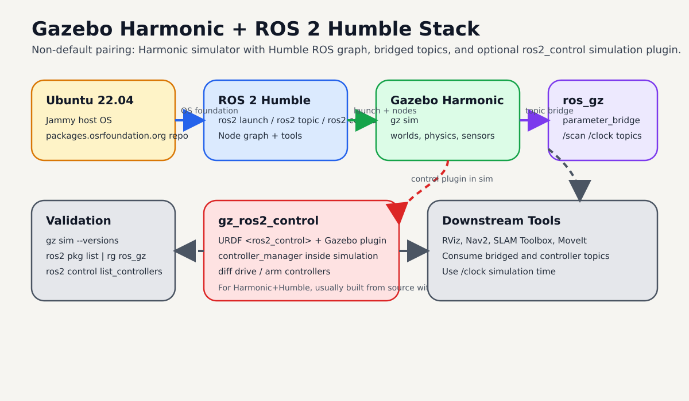
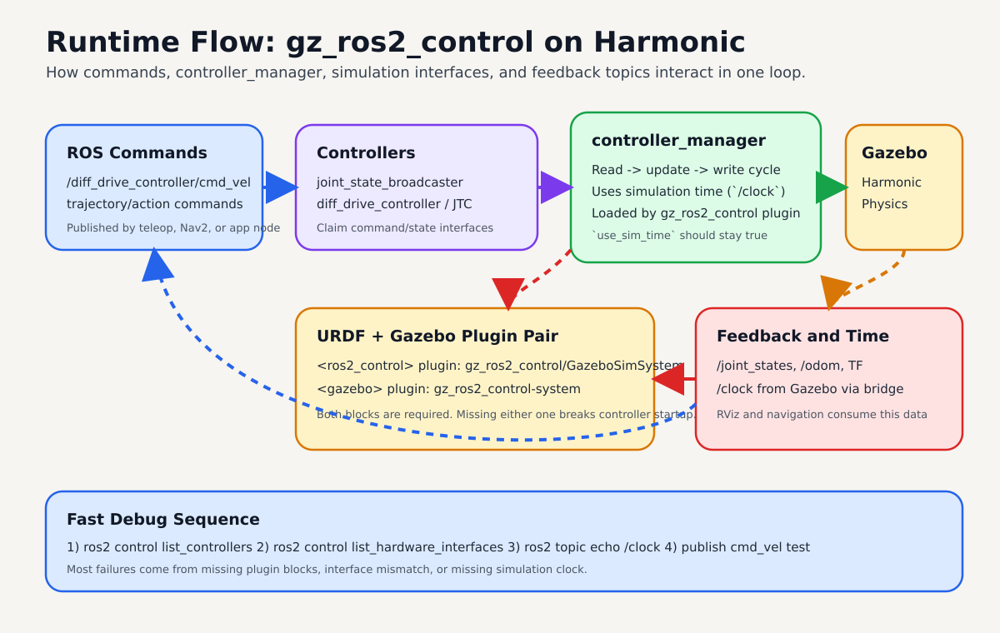

Gazebo Sim Harmonic with ROS 2 Humble¶
Use this page to run Gazebo Sim Harmonic on Ubuntu 22.04 with ROS 2 Humble.
By the end, you should be able to launch Gazebo from ROS 2, bridge key topics, and validate simulation time correctly.

High-level map of the full setup: OS, ROS graph, Gazebo simulator, bridge layer, and optional gz_ros2_control.
Quick Start¶
Install Harmonic and ROS integration:
sudo apt-get update
sudo apt-get install curl lsb-release gnupg
sudo curl https://packages.osrfoundation.org/gazebo.gpg \
--output /usr/share/keyrings/pkgs-osrf-archive-keyring.gpg
echo "deb [arch=$(dpkg --print-architecture) signed-by=/usr/share/keyrings/pkgs-osrf-archive-keyring.gpg] \
https://packages.osrfoundation.org/gazebo/ubuntu-stable $(lsb_release -cs) main" \
| sudo tee /etc/apt/sources.list.d/gazebo-stable.list > /dev/null
sudo apt-get update
sudo apt-get install gz-harmonic ros-humble-ros-gzharmonic
Launch Gazebo from ROS 2:
source /opt/ros/humble/setup.bash
ros2 launch ros_gz_sim gz_sim.launch.py gz_args:=empty.sdf
Expected result:
- Gazebo opens with
empty.sdf ros2 pkg list | rg ros_gzshows bridge/sim packages/clockis available once bridged
Warning
Harmonic + Humble is a non-default pairing. Official Humble default is Gazebo Fortress. Use this setup only when you explicitly need Harmonic.
Prerequisites¶
| Item | Requirement |
|---|---|
| OS | Ubuntu 22.04 (Jammy) |
| ROS | ROS 2 Humble installed and sourceable |
| Shell | bash with sudo access |
| GPU | Optional, but helpful for GUI performance |
Compatibility Notes¶
From Gazebo official compatibility guidance:
- ROS 2 Humble + Gazebo Harmonic is possible (
use with caution) - ROS 2 Humble default pairing remains Gazebo Fortress
- Non-default Harmonic packages can conflict with
ros-humble-ros-gz*
If you previously installed default Humble Gazebo packages, check for conflicts before installing Harmonic-specific ones.
dpkg -l | rg "ros-humble-ros-gz|ros-humble-ros-gzharmonic|gz-harmonic"
Install Steps¶

Use this order to avoid missing rosdep keys and package-mix conflicts.
1) Add Gazebo package repository¶
sudo apt-get update
sudo apt-get install curl lsb-release gnupg
sudo curl https://packages.osrfoundation.org/gazebo.gpg \
--output /usr/share/keyrings/pkgs-osrf-archive-keyring.gpg
echo "deb [arch=$(dpkg --print-architecture) signed-by=/usr/share/keyrings/pkgs-osrf-archive-keyring.gpg] \
https://packages.osrfoundation.org/gazebo/ubuntu-stable $(lsb_release -cs) main" \
| sudo tee /etc/apt/sources.list.d/gazebo-stable.list > /dev/null
sudo apt-get update
2) Install Harmonic and ROS bridge packages¶
sudo apt-get install gz-harmonic ros-humble-ros-gzharmonic
Expected result:
gz sim --versionsshows Harmonic- ROS packages for
ros_gzare available on Humble
Add ros2_control for Gazebo (Harmonic + Humble)¶
For Humble default Gazebo (Fortress), gz_ros2_control can be installed from apt.
For Harmonic + Humble, use the source build flow from official gz_ros2_control docs.

Runtime view: controllers feed command interfaces through controller_manager, Gazebo executes physics, and feedback returns on ROS topics with simulation time.
1) Install rosdep rules for Harmonic¶
sudo bash -c 'wget https://raw.githubusercontent.com/osrf/osrf-rosdep/master/gz/00-gazebo.list \
-O /etc/ros/rosdep/sources.list.d/00-gazebo.list'
rosdep update
rosdep resolve gz-harmonic
2) Build gz_ros2_control for Harmonic¶
source /opt/ros/humble/setup.bash
mkdir -p ~/gz_ros2_control_ws/src
cd ~/gz_ros2_control_ws/src
git clone https://github.com/ros-controls/gz_ros2_control -b humble
export GZ_VERSION=harmonic
rosdep install -r --from-paths . --ignore-src --rosdistro humble -y \
--skip-keys="ros_gz_bridge ros_gz_sim"
cd ~/gz_ros2_control_ws
colcon build
source ~/gz_ros2_control_ws/install/setup.bash
Expected result:
ros2 pkg list | rg gz_ros2_controlshowsgz_ros2_controlpackages- no unresolved
gz-*rosdep keys
3) Add ros2_control tags to URDF¶
Use gz_ros2_control as the hardware plugin inside your <ros2_control> block:
<ros2_control name="GazeboSimSystem" type="system">
<hardware>
<plugin>gz_ros2_control/GazeboSimSystem</plugin>
</hardware>
<joint name="left_wheel_joint">
<command_interface name="velocity"/>
<state_interface name="position"/>
<state_interface name="velocity"/>
</joint>
<joint name="right_wheel_joint">
<command_interface name="velocity"/>
<state_interface name="position"/>
<state_interface name="velocity"/>
</joint>
</ros2_control>
Then add the Gazebo plugin that loads controller_manager:
<gazebo>
<plugin filename="gz_ros2_control-system" name="gz_ros2_control::GazeboSimROS2ControlPlugin">
<robot_param>robot_description</robot_param>
<robot_param_node>robot_state_publisher</robot_param_node>
<parameters>/path/to/controllers.yaml</parameters>
</plugin>
</gazebo>
4) Launch and verify controllers¶
You can test with demos first:
source /opt/ros/humble/setup.bash
source ~/gz_ros2_control_ws/install/setup.bash
ros2 launch gz_ros2_control_demos diff_drive_example.launch.py
In another terminal:
source /opt/ros/humble/setup.bash
source ~/gz_ros2_control_ws/install/setup.bash
ros2 control list_controllers
ros2 control list_hardware_interfaces
Expected result:
joint_state_broadcasteris active- drive controller is active
- command and state interfaces are visible
Note
controller_manager should use simulation time in Gazebo. Bridge /clock if needed and verify use_sim_time behavior.
Launch Gazebo from ROS 2¶
Start Gazebo server + GUI:
source /opt/ros/humble/setup.bash
ros2 launch ros_gz_sim gz_sim.launch.py gz_args:=empty.sdf
Server-only launch:
source /opt/ros/humble/setup.bash
ros2 launch ros_gz_sim gz_server.launch.py world_sdf_file:=empty.sdf
Bridge Topics Between Gazebo and ROS 2¶
Bridge a sample sensor topic:
source /opt/ros/humble/setup.bash
ros2 run ros_gz_bridge parameter_bridge \
/scan@sensor_msgs/msg/LaserScan@gz.msgs.LaserScan
For ros2_control workflows, bridge /clock from Gazebo to ROS:
source /opt/ros/humble/setup.bash
ros2 run ros_gz_bridge parameter_bridge \
/clock@rosgraph_msgs/msg/Clock[gz.msgs.Clock
Expected result:
ros2 topic listincludes bridged topicsros2 topic echo /clockreceives simulation time
Validation Checklist¶
Run these checks:
gz sim --versions
ros2 pkg list | rg "ros_gz|gz"
ros2 topic list | rg "clock|scan"
You should confirm:
- Gazebo Harmonic is the active version
ros_gz_simandros_gz_bridgeare present- bridged topics appear and publish data
Troubleshooting¶
| Symptom | Likely cause | Fix |
|---|---|---|
ros2 launch ros_gz_sim ... fails |
ROS environment not sourced | source /opt/ros/humble/setup.bash |
| Harmonic packages fail to install | missing OSRF repo setup | re-run repo setup and apt-get update |
| package conflict errors | previously installed ros-humble-ros-gz* default stack |
inspect and remove conflicting packages before Harmonic install |
gz_ros2_control build fails on Humble |
rosdep rules for Harmonic missing | install OSRF rosdep rules and rerun rosdep update |
gz_ros2_control plugin not loaded |
URDF missing Gazebo plugin block | add <plugin filename="gz_ros2_control-system" ...> |
controller_manager warns about clock |
/clock not bridged |
bridge /clock with ros_gz_bridge |
| No sensor data in ROS | bridge direction/type mismatch | verify ROS_MSG and gz.msgs types for topic |